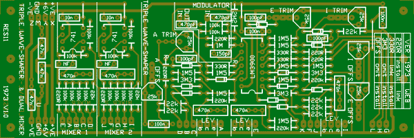
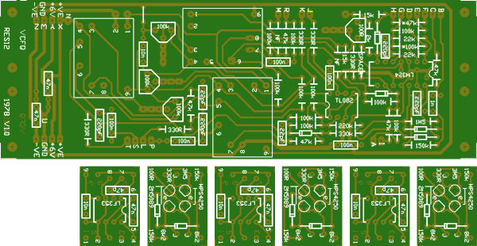
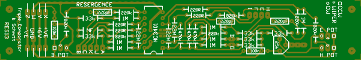
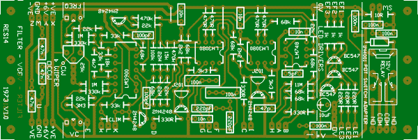
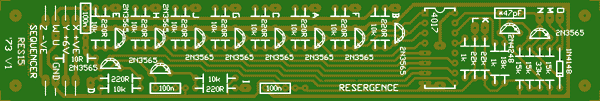
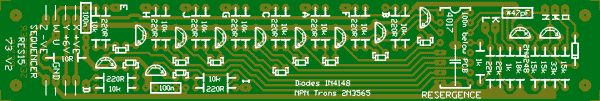

RES11
Triple Wave-shaper from 1973. This has been done in a way that two versions an be built. One way is from the (incorrect) schematic that is easily found on the web. The 1973 version can also be build, and appears to be identical to the current version as well. In the space left over on the PCB, two Audio Mixers from 1973 have been included. The remaining op-amp of the LM3900 was left disconnected on the original board. On this board it has been wired as a soft "AM or RING" modulator from the NS app. note 72. It should be obvious that it is not a true ring modulator. I do not recall what voltage my prototype was tested on. This is running on 0-12V and as such may prove to be less than satisfactory. It is a non-Serge space filler, so it really doesn't matter if it works or not.
2 units width

RES12
VCFQ or VCFX from 1978. The sub boards are more or less identical to those on the Serge, though may not by physically compatible. The board has sub-audio capabilities like the original Serge Filter (RES14).
Physically 2 units width. Costs 3 units width.

RES13
Triple Comparator and Schmitt Trigger from 1973. This is a standard Serge board, though I'd guess that the Schmitt Trigger was frequently left off panels.
1 units width

RES14
Filter - VCF from 1973. This is as per the original, though has two additions. 1) three emitter followers for driving LEDs for monitoring outputs etc. These are NOT wired to the VCF, and can be fed from a separated PSU. 2) A relay wired so that the switch on a push/pull switched pot (usually single pole) can be used to select the sub-audio setting (double pole). This is also NOT wired to the filter.
A current limiting resistor has been added after K (called k) to allow for easier experimentation with the slope.
Some values were changed for later runs of filters using this PCB. The 11M became 820k to start with.
2 units width

RES15 (tested)
Sequencer from 1973. The schematic of this does differ from that circulating the web in that there is a single diode into the Reset input. The second reset input is connected directly to the base of the transistor. This goes to the push button, then to a 15k resistor to positive. Output resistors are 220R. On one of my units, two of the 15k resistors were 18k. Board ID was R16. Neither the 47pF or 100n capacitors were fitted to either board.
The V1 board is sold out. The V2 board has additional diodes to allow outputs to be directly patched together.
1 unit width

